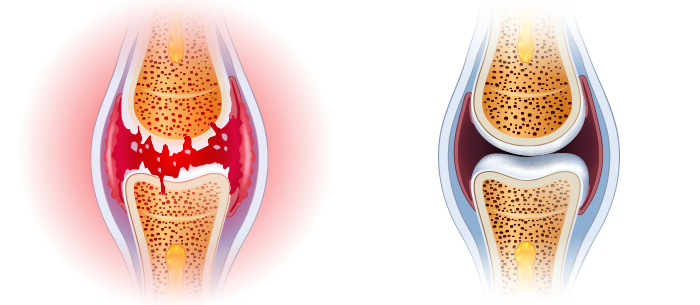

Zentrales Institut für Rheumatologie

Achten Sie auf Ihre Gelenke

Zentrum für starke Gelenke

Gesunde Gelenke
-
Ich bin eine Superoma!
Wegen meiner Knie- und Rückenschmerzen konnte ich kaum gehen. Tabletten, Spritzen und Operationen zeigten bei mir keine Wirkung. Im Gegenteil: Sie haben mir Geld und Energie weggenommen. Ich wusste nicht, was ich tun sollte. Zum Glück habe ich von diesem Mittel erfahren. Und wie gut, dass ich es getan habe! Ich fühlte mich von Anfang an besser. Nach ungefähr einem Monat fühle ich mich wie neu. Ich gehe lange spazieren und kümmere mich um den Garten, den wir mit meiner Enkelin gepflanzt haben. Der Schmerz ist vergessen. Danke!
-
Einfachheit und Effizienz
Es ist schwer zu glauben, dass eine solche einfache Methode so effektiv ist, es genügt, das Mittel zu nehmen und nach ein paar Tagen die Bewegungen ohne Beschwerden zu genießen. Meine Schwester, meine Cousins und ich haben es benutzt und empfehlen es jedem. Verabschieden Sie sich von Gelenkbeschwerden.
-

Ich fühle mich fit.
Die jahrelange harte Arbeit im Unternehmen hat meine Knie zermürbt. Ich habe meinen Enkeln versprochen, dass ich mit ihnen Fußball spielen oder Fahrrad fahren würde, konnte aber aufgrund von Schmerzen nicht. Die Kinder verstanden diese Dinge nicht und wurden sauer. Ich fühlte mich nutzlos. Bis meine Tochter mich dazu brachte, auszuprobieren. Ich spürte sofort den Unterschied. Es ist ein Monat her, seit ich es benutze und ich fühle mich unverwundbar, jetzt kann ich Zeit mit meiner Familie verbringen, besonders mit meinen Enkeln, wie ich es früher getan habe.
-

Ich habe mein Leben zurückgebracht.
Übergewicht und langes Stehen zerstörten meine Knie, ich konnte den Schmerz nicht ertragen, also nahm ich mehr als 10 Tabletten pro Tag. Aber ich fühlte mich überfordert und schläfrig, ich konnte nicht normal leben. Zum Glück hat ein Arbeitskollege dieses erstaunliche Produkt empfohlen. Dies erwies sich als ideale Lösung. Der Schmerz verschwand wie von Zauberhand und ich war wieder fasziniert von der Arbeit des Friseurs. Ich bin jetzt komplett gesund und habe mit dem Sport angefangen... Und ich habe 6 Kilo abgenommen!!! Eine unglaubliche Veränderung.
-

Meine Frau hat aufgehört sich zu beschweren.
Zu Hause findet meine Frau immer eine Beschäftigung für mich: den Wasserhahn reparieren, den Schrank verschieben oder etwas bemalen. Wie sollte ich mich bücken und anstrengen, wenn mein Rücken wehtut? Sowie Ellbogen und Knie. Glücklicherweise hat Gel meiner Wirbelsäule und meinen Gelenken geholfen, sich zu erholen. Ich fühlte mich, als würde ich das Gewicht verlieren, das ich seit Jahren trug. Meine Frau hat aufgehört sich zu beschweren, dass ich ihr nicht im Haus helfen möchte!
-
Ich kann wieder arbeiten
Stellen Sie sich vor, wie es ist, nicht mit einer Hand zu bewegen. Schwierig, nicht wahr? Genau das ist mir passiert, denn meine Finger schmerzten, meine Hände waren geschwollen und zitterten. Ich bin ein Juwelier, was ich tue, ist meine Arbeit und meine Leidenschaft. Ich musste meine kleine Werkstatt immer öfter schließen, und deswegen wurde die Situation mit dem Geld zu Hause schlechter. Ich fing an, nach Methoden zur Wiederherstellung der Gelenke zu suchen, und überall wurde mir gesagt, dass das Produkt das Beste ist. Ich habe es ausprobiert, ohne es zu testen, aber nach 20 Tagen waren meine Hände gesünder als vor 10 Jahren. Ich konnte wieder arbeiten!
-
Neues Leben zu einem so niedrigen Preis
Normalerweise, wenn etwas effektiv ist, muss es teuer sein. So war es bei meinem persönlichen Massagetherapeuten, der mich tausend Euro im Monat kostete und Wunder wirken sollte. Im Gegenteil, es machte es nur schlimmer, und meine Gelenke und meine Wirbelsäule schmerzten noch stärker. Als mein Schwager mir vorschlug, auszuprobieren, hielt ich das für völligen Blödsinn. Wie kann mir ein Gel helfen, wenn mir ein angeblich phänomenaler Masseur nicht geholfen hat? Sie hätten mein Gesicht sehen sollen, wenn der Schmerz weg ist. Ein Wunder!
-

Die einzige effektive Methode
Ich habe verschiedene Methoden ausprobiert, um das Knirschen und die Hüftschmerzen loszuwerden. Es hat nichts geholfen. Schlimmer noch, die Degeneration hat sich auf die Wirbelsäule ausgebreitet. Mit ist genau das Gegenteil passiert. Ich mache mir keine Sorgen mehr um meine Gesundheit, weil ich zu 100% gesund bin!
Nach 14 Tagen werden Sie die Schmerzen in den Gelenken und der Wirbelsäule vergessen - die Wirkung wird durch unabhängige Tests garantiert
Hallo!
Ich bin Professor Fritz Peters, Wissenschaftler und Spezialist für Molekularbiologie. Hier möchte ich Ihnen die größte Errungenschaft meines Lebens vorstellen. Ich habe eine Methode entwickelt, die es jedem ermöglicht, Schmerzen zu beseitigen, Gelenke und Wirbelsäule wiederherzustellen und gleichzeitig in nur 14 Tagen 100% Beweglichkeit zurückzugewinnen.
Also, wenn Sie wollen, OHNE Chemie und wirkungslose Präparate:
- Schmerzen in den Gelenken und der Wirbelsäule lindern und sofort nach der Anwendung der Methode Erleichterung verspüren;
- Gelenke, Sehnen, Muskeln und Wirbelsäule auf 87% wiederherstellen, damit sie wie neu funktionieren;
- 100% körperliche Gesundheit zurückgewinnen und keine Angst davor haben, behindert zu werden;
- Steifheit und Taubheit in den Gelenken und der Wirbelsäule beseitigen, wieder Komfort und Bewegungsfreiheit verspüren;
- Ihre Gelenke und Wirbelsäule von der Zerstörung schützen und die absolute körperliche Gesundheit für viele Jahre haben;
- Degeneration und Entzündung beseitigen, Schmerzen lindern und wieder Komfort in Bewegung bringen;
- den Körper nach Brüchen, Verstauchungen und Verletzungen wiederherstellen;
- Und dank dessen haben Sie dreimal mehr Energie und können das Leben wieder genießen!
Sie sollten wissen, dass all dies ohne gefährliche Operationen, teure Behandlungen, endloses Warten auf Spezialisten in der Warteschlange erreicht werden kann (die auch aufgeben, ohne etwas zu tun...) und ohne das Schlucken giftiger Chemikalien (schädlich für Leber, Magen und Nieren)... und schließlich, Sie sparen Tausende von Euro. Wenn Sie dies tun möchten, sollten Sie lesen, was ich Ihnen sagen möchte.
Es spielt keine Rolle, wie alt Sie sind und wie lange Sie an Gelenk- oder Wirbelsäulenschmerzen leiden. Es spielt keine Rolle, ob Ihre Knochen innerhalb von 2 Tagen oder 20 Jahren quietschen. Selbst wenn Ihnen der Arzt gesagt hat, dass Ihre Gelenke und Wirbelsäule völlig zerstört sind und Sie alle Hoffnung auf ein normales Leben verloren haben... Sie sollten wissen, dass Sie nach 14 Tagen 100 % Mobilität genießen können. Kein Schmerz!!
Sehen Sie, warum meine Methode eine Alternative zu ineffizienten Methoden zur Bekämpfung von Gelenkschmerzen ist:
- Lindert Schmerzen sofort nach der Anwendung und beseitigt sie nach 14 Tagen für immer;
- sicher für den Körper: Die makromolekulare Formel ist in Form eines 100% natürlichen Gels, das in perfekter Harmonie mit dem menschlichen Körper arbeitet.
- stellt selbst die am meisten beschädigten Gelenke und die Wirbelsäule wieder her, damit sie wie neu funktionieren, ohne Schmerzen;
- es ist einfach anzuwenden und jeder kann sich zu Hause selbst behandeln lassen, anstatt in den Arztpraxen zu warten und um Hilfe zu bitten;
- sparen Sie Tausende von Euro, anstatt sie für teure und ineffiziente chemische Medikamente und Therapien auszugeben.
Ich habe eine natürliche Methode entwickelt, die Ihre zerstörten Gelenke und Wirbelsäule repariert
Dank ihr werden Sie den Schmerz und die Angst vor totaler Behinderung vergessen... Alle Probleme, an denen Sie aufgrund schwacher Gelenke oder einer schwachen Wirbelsäule leiden, werden der Vergangenheit angehören. Sie werden nicht nur Schmerzen, sondern auch Steifheit, Krämpfe und Schwellungen vollständig loswerden. Schließlich können Sie alles tun, was Sie wegen des Schmerzes nicht tun konnten.
Sie können problemlos Treppen steigen, sich bücken, Ihre Enkel auf den Armen tragen. Sie können sich in Ruhe um den Garten kümmern, spazieren gehen, Fahrrad fahren, tanzen! Und das alles, weil ich in der Lage war, eine innovative Formel zu entwickeln, um die Gelenke wiederherzustellen und ihnen die volle Beweglichkeit zurückzugeben. Wie habe ich das gemacht?
Ich wollte meine Mutter vor einer Behinderung retten
Nach neuesten Studien hat jeder dritte Einwohner Deutschlands im Alter zwischen 36 und 95 Jahren Probleme mit den Gelenken oder der Wirbelsäule. Diese Leute merken es oft nicht einmal, sie glauben, dass es normal ist, dass der Körper manchmal schmerzt, taub wird oder klickt. Bei den meisten besteht jedoch das Risiko einer erheblichen Knorpelzerstörung und -degeneration, die zu einer Behinderung führen kann.
Leider hat dieses Problem auch meine Mutter berührt. Anfangs hatte sie es schwer, die Treppe zu steigen oder von der Couch aufzustehen. Aber dann verschlechterte sich die Situation... Der Garten, den sie so gerne gepflegt hatte, begann mit Unkraut zu wachsen, weil sie ihn nicht pflegen konnte. Sie hat aufgehört, uns zum Familienessen einzuladen. Sie wurde immer reizbarer und trauriger. Dann konnte sie sich aufgrund von Schmerzen in Knien, Hüften, Wirbelsäule und Ellbogen nicht einmal duschen.
Es war gefährlich für ihr Leben!
Das Schlimmste war, dass die Unbeweglichkeit ihr Leben bedrohte. Ich werde nie den Tag vergessen, an dem ich meine Mutter abholen wollte, um sie zu einem Gastroenterologen zu bringen. Meine Mutter musste gerade die Straße überqueren und... sie wurde fast von einem Auto angefahren! Wegen der Schmerzen ging sie sehr langsam und plötzlich wurde ihr Knie so steif und schmerzte, dass sie keinen Schritt mehr machen konnte. Der Fahrer bremste im letzten Moment ab...
Ich war stinksauer, als ich die Tüte meiner Mutter mit diversen beworbenen Produkten für die Gelenke sah. Es stellte sich heraus, dass sie sie mit einer Handvoll genommen hatte. So wurde klar, warum sie ein Magengeschwür, Leberprobleme und andere Magenprobleme hatte ... Die Frau wollte etwas tun, aber diese Medikamente halfen nicht nur nicht, sondern vergifteten schließlich ihren Körper.
Wie habe ich das "Patent" für unzerstörbare Gelenke erfunden?
Ich musste meiner Mutter helfen, gesunde Gelenke und damit Gesundheit und Lebensfreude wiederzugewinnen. Ich wollte, dass sie eine wunderbare Großmutter für die Enkelkinder ist, genauso wie sie eine wunderbare Mutter für mich war. Dann dachte ich mir: "Mann, du bist ein Wissenschaftler! Du hast an der Entdeckung vieler Substanzen teilgenommen, die verschiedene Krankheiten bekämpfen. Warum entwickelst du nicht ein Produkt, um die Gelenke zu stärken?" Also habe ich mit den Tests begonnen...
Ich habe ein Jahr lang intensive Laboruntersuchungen durchgeführt. Ich habe verschiedene Wirkstoffkombinationen an meiner Mutter getestet. Ich muss betonen, dass sie alle 100% natürlich und sicher für den Körper waren. Ich habe mich von den klösterlichen Kräuterrezepten inspiriert und sie mit den neuesten Errungenschaften der Molekularbiologie kombiniert. Das wissenschaftliche Wissen, der Glaube an die Natur und eine Prise Glück haben sich schnell gelohnt: Ich habe eine einzigartige makromolekulare Formel entwickelt.
Ich begann sofort, großangelegte Tests durchzuführen. Wirkungsgrad 98% bestätigt von den größten Forschungsinstituten in Europa und den USA! Schon in der Testphase hat meine makromolekulare Formel bei Tausenden von Freiwilligen die Gelenke- und Wirbelsäulenfunktionen auf natürliche Weise wiederhergestellt.
Erstaunliche Effekte
Der Schmerz meiner Mutter ließ sofort nach der Verwendung des Produkts nach. Sie war froh, dass sie nicht mehr von pochenden Schmerzen in den Knien gequält wurde. Aber das war nur der Anfang! Nach einer Woche hörten ihre Gelenke und Wirbelsäule auf zu knirschen und taub zu werden. Dann verschwanden die Schwellungen in den Knien und Ellbogen, alle Entzündungen in den Gelenken und der Wirbelsäule gingen durch. Meine Mutter kümmert sich wieder um ihren Lieblingsgarten. Wir waren alle erstaunt, als sie plötzlich auf ein Fahrrad stieg und glücklich fuhr!
"Warum geht ihr so langsam?", fragte sie ungeduldig, als wir mit der ganzen Familie zum Mittagessen gingen. Und wir haben es einfach noch nicht gewohnt, in ihrer Anwesenheit langsam zu gehen. Nach 3 Wochen gab meine Mutter glücklich zu: "Mein Sohn, meine Gelenke sind geheilt. Ich fühle mich so lebhaft wie in meiner Jugend! Du hast das Heilmittel für Gelenkschmerzen erfunden! So vielen Menschen wirst du helfen! Ich bin dir sehr dankbar". Und tatsächlich tanzte meine Mutter zu ihrem 85. Geburtstag vor Glück mit ihren Urenkeln. Und die Gäste standen mit ausgestellten Augen da, als sie sahen, in welcher Form sie war!

Meine Mutter hat ihre Beweglichkeit vollständig wiederhergestellt und mit ihr die Energie und Lebensfreude.
Bisher war eine Verschlechterung der Gelenke und der Wirbelsäule im Laufe der Jahre unvermeidlich. Heute kann ich mit meiner makromolekularen Formel den Prozess der Abnutzung der Gelenke und Wirbel des menschlichen Skeletts nicht nur verlangsamen, sondern auch umkehren.
Lassen Sie mich Ihnen genau erklären, wie meine superwirksame Formel für starke Gelenke funktioniert. Dieser Prozess ist ziemlich kompliziert, aber ich werde versuchen, ihn so zu erklären, dass er auch für einen Nichtfachmann verständlich ist.
Beseitigt sofort Schmerzen und stellt die Gelenke 24 Stunden am Tag wieder her
Gelenke und Wirbelsäule verschleißen im Laufe der Jahre, aber sie werden auch durch Übergewicht, intensive körperliche Arbeit, das Tragen schwerer Gegenstände, übermäßiges Sport, Verletzungen und Prellungen zerstört. Synovialflüssigkeit und Knorpel werden zerstört. Gelenke sind wie ein ungeschmiertes Scharnier: Sie beginnen ständig zu reiben und zu verschleißen. Mit der Zeit beginnen Sie sich steif und schrecklich zu fühlen, was Sie daran hindert, sich normal zu bewegen. Es entwickeln sich Entzündungen und schwere Degenerationen.
Leider haben Knorpelzellen und Synovialflüssigkeitszellen keine Fähigkeit zur Selbstheilung. Dies bedeutet, dass sie sich im Gegensatz zu anderen Zellen des menschlichen Körpers nicht wieder zum Leben erwecken können. Deshalb verschlechtern sich Ihre Gelenke und Wirbelsäule von Tag zu Tag. Natürlich werden Sie nicht aufhören zu gehen und alltägliche Dinge zu erledigen, um Ihre Gelenke und Wirbelsäule zu schützen. Das wäre absurd.
Daher bestand meine Aufgabe darin, eine radikale Formel zu entwickeln, die Schmerzen beseitigt, beschädigte Gelenke und die Wirbelsäule repariert und sie vor zukünftigen Schäden schützt. Und ich habe es geschafft! Ich habe eine makromolekulare Formel für intensive Regeneration entwickelt. Ich habe sie genannt.
Die einzigartige Formel dringt sofort in die betroffenen Bereiche ein und schaltet elektrische Schmerzimpulse auf zellulärer Ebene aus, sodass Sie Ihrer Arbeit ohne Schmerzen nachgehen können. Aufgrund seiner Eigenschaften stimuliert sie die Zellernährung, die regenerative Prozesse um 300% wiederherstellt. Gleichzeitig starten natürliche Inhaltsstoffe die Prozesse der automatischen Regeneration von Knorpel und Synovialflüssigkeit. Die regelmäßige Anwendung dieser Formel reicht aus, um die Regeneration 24 Stunden am Tag zu ermöglichen. Sie tun, was Sie immer tun und Ihre Gelenke und Wirbelsäule werden jünger und stellen die Beweglichkeit wieder her. So verschwinden Degeneration und Schmerz innerhalb 30 Tagen für immer. Ohne Nebenwirkungen!
Warum wurde meine makromolekulare Formel als "Wundermittel gegen Gelenkschmerzen" bezeichnet?
ES STELLT KNORPELGEWEBE UND SYNOVIALFLÜSSIGKEIT ZU MEHR ALS 98% EFFEKTIV WIEDER HER
VORHER
Zerstörtes und von Degeneration und Schmerzen betroffenes Gelenk
NACHHER
Wiederhergestelltes Gelenk: 100% gesund und schmerzfrei
Bisher mag es wie ein Wunder wirken. Dies ist jedoch eine Tatsache, die den Fall meiner Mutter und 14.000 Menschen bestätigt, die dank meiner Methode bereits starke Gelenke und die Wirbelsäule wiederherstellen konnten. Darüber hinaus wurde die Wirksamkeit der makromolekularen Formel vom Deutschen Forschungszentrum in Dortmund eindeutig nachgewiesen. Dies ist eine weltweite Entdeckung, die die Anerkennung und Bewunderung der besten Spezialisten in den Bereichen Rheumatologie, Orthopädie und Neurologie gewonnen hat. Auf der anderen Seite bekomme ich immer wieder emotionale Briefe von Leuten, die mir dafür danken, dass ich sie "geheilt" habe. Das ist der Hauptgrund, warum ich glücklich und stolz auf diese Entdeckung bin.
100% SICHER UND EXTREM EINFACH ZU BEDIENEN

Natürliche Inhaltsstoffe wirken Wunder: Die Wissenschaft hat es geschafft, die perfekte Zusammensetzung zu schaffen! Es war dieses Motto, das mich bei der Erstellung einer makromolekularen Formel zur Reparatur von Gelenken begleitete. Sie müssen nur eine kleine Menge des Produkts in kreisförmigen Massagebewegungen auftragen, bis sie 2-3 Mal am Tag vollständig absorbiert ist, um den Schmerz zu beseitigen, und dann, Tag für Tag, genießen Sie die Stärkung der Gelenke und der Wirbelsäule und kehren Sie zu einem erfüllten Leben zurück! (Die Wirkung hängt von den Eigenschaften jedes Organismus ab)
Alle Ihre Freunde und Verwandten, die es gewohnt sind, Sie unter Schmerzen leiden zu sehen und kaum zu Fuß zu gehen, werden erstaunt sein. Wenn sie sehen, wie Sie ohne Schmerzen laufen, Fahrrad fahren und tanzen, werden sie nicht glauben, dass Sie Ihre Gelenke in 30 Tagen repariert haben!

SOFORTIGE SCHMERZLINDERUNG


NATÜRLICHE THERAPIE OHNE NEBENWIRKUNGEN


WIEDERHERSTELLUNG DER GELENKE UND DER WIRBELSÄULE


EINFACHE VERWENDUNG


100% KÖRPERLICHE LEISTUNGSFÄHIGKEIT IN 30 TAGEN

SPAREN VON TAUSENDEN EURO
Wie können Sie diese Gelegenheit verpassen, den Schmerz zu überwinden und sich für immer gesund zu fühlen?
Sie können weiterhin unter schrecklichen Schmerzen in Ihren Gelenken und Ihrer Wirbelsäule leiden. Können Sie auch Ihre Gesundheit mit schädlichen Chemikalien ruinieren und mit dem Gespenst der Behinderung leben, das hinter Ihnen lauert? Aber warum, wenn ich Ihnen eine schnelle, einfache und kostengünstige Möglichkeit garantiere, Ihre Gesundheit ohne Schmerzen wiederzuerlangen? Sie brauchen nur 30 Tage, um sich den 14.000 zufriedenen -Benutzern anzuschließen, die bereits Schmerzen überwunden, ihre Gelenke und Wirbelsäule wiederhergestellt haben und sich nun einer guten Gesundheit erfreuen!
Sie riskieren nichts!
Mit beseitigen Sie Schmerzen sofort und stellen die körperliche Beweglichkeit in 30 Tagen wieder her. Und Sie riskieren nichts! Als weltweite Errungenschaft hat meine makromolekulare Formel die prestigeträchtige dreifache Garantie für Originalität, Qualität und Zufriedenheit erhalten.
Dreifache Zufriedenheitsgarantie
1. Garantierte Originalität: Die makromolekulare Formel von basiert auf den stärksten Substanzen, die Gelenke und Wirbelsäule wiederherstellen. Seine Wirksamkeit wird durch Labortests bestätigt. Dies ist die einzige solche innovative Formel. Daher können Sie sicher sein, dass Sie das Originalprodukt erhalten, das nur über diese Website verfügbar ist.
2. Qualitätsgarantie: dank des fortschrittlichen Herstellungsprozesses der makromolekularen Formel entspricht sie den höchsten Qualitätsstandards. Unter Berücksichtigung Ihrer Gesundheit und Ihres Wohlbefindens wird die Wirkstoffkonzentration so gewählt, dass die Therapie absolut sicher ist. Und all dies, um sicherzustellen, dass ihre Wirkung zu 100% Ihren Erwartungen entspricht.
3. Zufriedenheitsgarantie: zahlreiche Labor- und Verbraucherversuche bestätigen die erhöhte Wirksamkeit von . Dank dieser Ergebnisse wurde das Mittel von Spezialisten aus der ganzen Welt anerkannt, die es ihren Patienten empfehlen. Sie sind überzeugt, dass Sie in 30 Tagen Schmerzen in den Gelenken und der Wirbelsäule loswerden und auch 100% Mobilität zurückgewinnen werden.
Vergessen Sie Schmerzen, stellen Sie Gelenke wieder her und gewinnen Sie in 30 Tagen einfach, sicher und kostengünstig 100 % Ihrer körperlichen Gesundheit zurück
Große Pharmaunternehmen in den USA und Japan kämpfen wörtlich um ein Patent für meine makromolekulare Formel. Wenn ich es verkaufe, wird es weltweit verfügbar sein, aber natürlich zu einem unerschwinglichen Preis.
Bis dahin habe ich beschlossen, es in Deutschland verfügbar zu machen, indem ich mich mit einem Discount-Club mit 50% Rabatt auf die Finanzierung zusammengetan habe. Alles, um möglichst vielen Menschen in meiner Heimat zu helfen, Gelenk- und Wirbelsäulenprobleme ein für allemal loszuwerden.
Ich fordere Sie daher auf, diese Gelegenheit zu nutzen! Eine Bestellung im Discount Club aufzugeben ist ganz einfach. Sie müssen kein Geld senden oder mit einer Karte bezahlen, um das Produkt zu erhalten. Sie müssen nur das Formular in 2 Minuten ausfüllen und in wenigen Tagen erhalten Sie ein Paket, das Sie bequem per Post bezahlen können.
Danke, dass Sie sich die Zeit genommen haben, meine Nachricht zu lesen. Ich wünsche Ihnen viel Gesundheit in Ihrem neuen Leben, in dem Sie sich guter Gesundheit erfreuen und... In nur 30 Tagen werden Sie tanzen, laufen, Fahrrad fahren und alles tun können, was Sie bisher durch den Schmerz eingeschränkt hat!
Professor Fritz Peters
Erhalten Sie für die
Teilnahme
am Rabattclub Rabatt
50%

-
Ich bin eine Superoma!
Wegen meiner Knie- und Rückenschmerzen konnte ich kaum gehen. Tabletten, Spritzen und Operationen zeigten bei mir keine Wirkung. Im Gegenteil: Sie haben mir Geld und Energie weggenommen. Ich wusste nicht, was ich tun sollte. Zum Glück habe ich von diesem Mittel erfahren. Und wie gut, dass ich es getan habe! Ich fühlte mich von Anfang an besser. Nach ungefähr einem Monat fühle ich mich wie neu. Ich gehe lange spazieren und kümmere mich um den Garten, den wir mit meiner Enkelin gepflanzt haben. Der Schmerz ist vergessen. Danke!
-
Einfachheit und Effizienz
Es ist schwer zu glauben, dass eine solche einfache Methode so effektiv ist, es genügt, das Mittel zu nehmen und nach ein paar Tagen die Bewegungen ohne Beschwerden zu genießen. Meine Schwester, meine Cousins und ich haben es benutzt und empfehlen es jedem. Verabschieden Sie sich von Gelenkbeschwerden.
-
Ich fühle mich fit.
Die jahrelange harte Arbeit im Unternehmen hat meine Knie zermürbt. Ich habe meinen Enkeln versprochen, dass ich mit ihnen Fußball spielen oder Fahrrad fahren würde, konnte aber aufgrund von Schmerzen nicht. Die Kinder verstanden diese Dinge nicht und wurden sauer. Ich fühlte mich nutzlos. Bis meine Tochter mich dazu brachte, auszuprobieren. Ich spürte sofort den Unterschied. Es ist ein Monat her, seit ich es benutze und ich fühle mich unverwundbar, jetzt kann ich Zeit mit meiner Familie verbringen, besonders mit meinen Enkeln, wie ich es früher getan habe.
-
Ich habe mein Leben zurückgebracht.
Übergewicht und langes Stehen zerstörten meine Knie, ich konnte den Schmerz nicht ertragen, also nahm ich mehr als 10 Tabletten pro Tag. Aber ich fühlte mich überfordert und schläfrig, ich konnte nicht normal leben. Zum Glück hat ein Arbeitskollege dieses erstaunliche Produkt empfohlen. Dies erwies sich als ideale Lösung. Der Schmerz verschwand wie von Zauberhand und ich war wieder fasziniert von der Arbeit des Friseurs. Ich bin jetzt komplett gesund und habe mit dem Sport angefangen... Und ich habe 6 Kilo abgenommen!!! Eine unglaubliche Veränderung.
-
Meine Frau hat aufgehört sich zu beschweren.
Zu Hause findet meine Frau immer eine Beschäftigung für mich: den Wasserhahn reparieren, den Schrank verschieben oder etwas bemalen. Wie sollte ich mich bücken und anstrengen, wenn mein Rücken wehtut? Sowie Ellbogen und Knie. Glücklicherweise hat Gel meiner Wirbelsäule und meinen Gelenken geholfen, sich zu erholen. Ich fühlte mich, als würde ich das Gewicht verlieren, das ich seit Jahren trug. Meine Frau hat aufgehört sich zu beschweren, dass ich ihr nicht im Haus helfen möchte!
-
Ich kann wieder arbeiten
Stellen Sie sich vor, wie es ist, nicht mit einer Hand zu bewegen. Schwierig, nicht wahr? Genau das ist mir passiert, denn meine Finger schmerzten, meine Hände waren geschwollen und zitterten. Ich bin ein Juwelier, was ich tue, ist meine Arbeit und meine Leidenschaft. Ich musste meine kleine Werkstatt immer öfter schließen, und deswegen wurde die Situation mit dem Geld zu Hause schlechter. Ich fing an, nach Methoden zur Wiederherstellung der Gelenke zu suchen, und überall wurde mir gesagt, dass das Produkt das Beste ist. Ich habe es ausprobiert, ohne es zu testen, aber nach 20 Tagen waren meine Hände gesünder als vor 10 Jahren. Ich konnte wieder arbeiten!
-
Neues Leben zu einem so niedrigen Preis
Normalerweise, wenn etwas effektiv ist, muss es teuer sein. So war es bei meinem persönlichen Massagetherapeuten, der mich tausend Euro im Monat kostete und Wunder wirken sollte. Im Gegenteil, es machte es nur schlimmer, und meine Gelenke und meine Wirbelsäule schmerzten noch stärker. Als mein Schwager mir vorschlug, auszuprobieren, hielt ich das für völligen Blödsinn. Wie kann mir ein Gel helfen, wenn mir ein angeblich phänomenaler Masseur nicht geholfen hat? Sie hätten mein Gesicht sehen sollen, wenn der Schmerz weg ist. Ein Wunder!
-
Die einzige effektive Methode
Ich habe verschiedene Methoden ausprobiert, um das Knirschen und die Hüftschmerzen loszuwerden. Es hat nichts geholfen. Schlimmer noch, die Degeneration hat sich auf die Wirbelsäule ausgebreitet. Mit ist genau das Gegenteil passiert. Ich mache mir keine Sorgen mehr um meine Gesundheit, weil ich zu 100% gesund bin!
Kommentare:
Markus Domann
Eine Lebensgeschichte! Ich ging durch neun Höllenkreise im Krankenhaus, durch alle Behandlungen und die Folter der Behandlung. Die Gelenke schmerzten weiter. Ich leide bis heute an den Gelenken. Wo finde ich dieses ?
Elena Ruppert
Dieses Mittel wird nicht in Apotheken verkauft! Ich habe alle Apotheken der Stadt umgangen! Ich habe es hier bestellt, das Mittel wurde schnell geliefert, außerdem bieten sie hier einen Rabatt an. Ich begann zu verwenden.
Klaus Rottendorf
Ich bin zweimal operiert worden. Ungefähr sechs Monate lag ich, die Genesung war sehr lang. Ich fand und nach einem Monat vergaß ich die Operation, meine Knie hörten auf zu schmerzen und zu schwellen! Ein wirklich gutes Mittel ohne Nebenwirkungen
Erik Weber
Mein Großvater wurde mit therapiert und nahm keine Medikamente ein. Er sagt, er sei wiedergeboren. Vorher lag er den ganzen Tag im Bett und jetzt macht er immer etwas, ich sehe ihn immer beschäftigt
Simon Neumann
Ich arbeite als Friseurin. Ich habe oft Gelenkverletzungen und hilft mir. Das Mittel lindert Schmerzen und repariert das beschädigte Gelenk schnell.
Sonja Wolf
Ich beschäftigte mich mein ganzes Leben lang mit Eiskunstlauf, musste aber aufhören... meine Gelenke sind sehr schmerzhaft. Ich bin nicht zum Arzt gegangen. Ärzte verschreiben viele teure Medikamente, die aber gar nicht wirken. Ich hatte das Glück, dass meine Tante als Therapeutin arbeitet und mir riet, zu suchen. Ich brauchte nur 3 Packungen, um mich vollständig zu erholen!
Katja Hueber
Vor einem Jahr habe ich mir meinen linken Arm verletzt, der Ellbogen schmerzte ständig. Im Krankenhaus wollten die Ärzte mich operieren. Ich hatte Angst, lehnte ab und suchte nach alternativen Lösungen. Meine Großmutter gab mir . Sie benutzt es für Gelenke und es hilft. Nach den ersten paar Anwendungen ließen die Schmerzen nach, aber die Beschwerden blieben, und dann ging das Mittel aus... Ich werde mehr bestellen)
Erika Hoffmann
Ich konnte chronische Arthritis mit heilen! In nur einer Therapiekur! Meine Frau hat es für mich gekauft. Sie sagte, sie habe von seiner Wirksamkeit gehört und alle unsere Apotheken umgangen, und dann sagte der Verkäufer ihr, dass sie es nur über das Internet kaufen könne.
Manuel Müller
Ich stimme allen Kommentaren zu. Funktioniert das wirklich? Ich zögerte, es zu kaufen, versuchte viele Salben, Mittel und Medikamente. Der Effekt war immer vorübergehend. Nach der Anwendung von hörten die Gelenke auf, für immer zu schmerzen. Die Therapie dauerte nur etwas mehr als einen Monat.